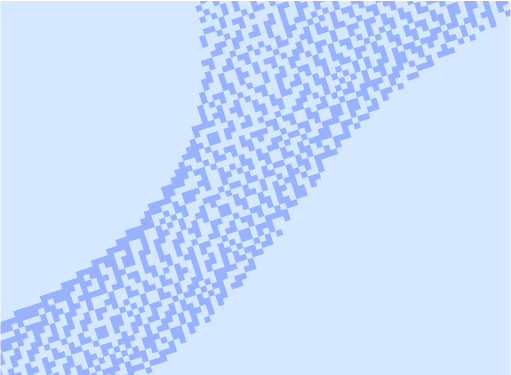
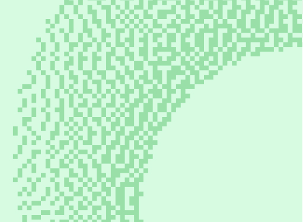

Руководство
Эта методичка поможет вам создать эффективный и профессиональный научный постер для конференций и симпозиумов. В нем пошагово изложены ключевые аспекты разработки постеров, от выбора темы и структуры до дизайна и визуальной презентации данных.
С чего начать

Для чего вам плакат?
Почему стоит вкладываться в создание плаката?

Выборка материала
Отобрать материал из вашего готового исследования
Презентация плаката
Как хорошо защитить плакат на конференции

Частые ошибки
Самые распрстраненные ошибки и как их исправть
Композиция

Принципы визуальной навигации
Как правильно управлять вниманием

Роль пространства
Соотношение элементов и пустого пространства
Модульные сетки
Как правильно настроить количество и ширину колонок